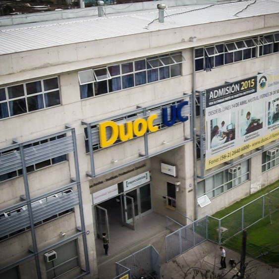

¿COMO EMPEZÓ TODO?
La NASA se ha contactado con la dirección del Liceo Politécnico Andes y esta le encargó a las y los estudiantes cursando Cuarto Medio realizar un estudio de la atmósfera y el suelo de algún planeta que sea favorable para la vida humana. Y así constribuir en el desarrollo científico y tecnológico de estas materias.
